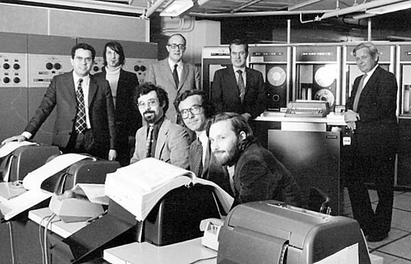

Installation team for the Paris 645, 1972.
Front row: Dave Vinograd, Allen Berglund, Rick Gumpertz.
Back row: Albert Harari, Marc Loux, François Du Jeu, John Zona (Field Engineer), John Ammons (CPU Design).
(Photo saved by Marc Loux. Click for a Bull history page with a larger picture.)
The following are vignettes of the installation saga of the GE645 system installation in Paris in 1972. {Story: Shangri-La and the Paris 645 by Jean Bellec.} The participants were myself, Rick Gumpertz, John Ammons (deceased), John Zona and Allen Berglund (deceased). Comments and corrections would be appreciated.
The system was to be installed at the Bull Gambetta offices, more about the machine room later.
As I was the only member of the team who had been to France before, I was appointed minder (except for Rick, who had taken a year off from MIT and was already onsite working for Bull). The others had never been outside the US and had to be carefully moved from hamburgers to good French food. There was also a problem in ordering drinks. If you asked for a martini you got vermouth, but NO gin as the two Johns discovered. I would note that the only person who spoke french was Rick so ordering food or getting directions was a bit of a struggle.
I consulted with André Bensoussan about where to stay in Paris. He suggested the left bank near Rue Dragon as the area had many restaurants and was convenient to the metro. The ride to Gambetta was about 30 minutes.
Rick had a wonderful restaurant guide book which rated all Paris restaurants from 1 to 20. Nothing got a 20 - we resolved not to eat anywhere that got less than 10. This was to cause serious problems when we got back to the US and the expense accounts were bounced by Phoenix (C. Walker Dix VP Eng) with the note that $25/day for food was way too much and how come we never took taxis ? Well I took the hint and helped everyone to massage the expense reports to include all sorts of taxis and laundry expenses. The accounts made it through the second time. After that I was always consulted at CISL about how to manage expense accounts for business trips.
The machine room at Bull was on the ground floor with doors that opened to the street. The roof was glass and it leaked. I am not sure about AC but there were NO humidity controls. This was proved to us when after many days of trying to track down a disk controller problem, the French Field Engineer put his wife's hair dryer in the controller cabinet, drying it out, and after a short time the problem went away.
We were supposed to be onsite for 2 weeks. Somehow we managed to stretch it to 4+ weeks. The stretch was primarily due to hardware problems, such as the disk drive controller problem described above. But the system was operational when we left although access was primarily via TTY37s in the machine room - a copy of the layout at 545 Tech Square. We also had access to some other terminals for EMail back to the states though I can not remember how it worked.
And we got better and better about how much and how good the wine we drank was. By the end of the trip we could each consume a bottle with dinner, then a glass of brandy to wash it all down and still go to work the next day. And of course the Bull cafeteria served wine (in a cardboard box) for lunch.
We also liked to taste the dishes that the others were having so our plates would be edged with mini portions of the others. This so upset one proprietor that he brought us extra side plates to make things easier.
During the trip my wife returned to the UK to visit her parents. I spent my weekends commuting to London. On one of these trips I was stopped at immigration and asked what I did that made me a weekend tourist. Flying into England every weekend was not something one did in those days.
Allen Berglund preferred Chinese food to French. So much so that he returned to the same Chinese restaurant for three nights in succession to prove that it was not the food that was making him sick. He was wrong. Luckily he went to the restaurant alone.
Allen's understanding of French also proved faulty when we were invited out for a celebratory lunch after the system was finally working. When asked whether he wanted an apéritif he replied yes. It was only after the third time the question was asked that I realized that Allen thought an apéritif was a specific drink.
And by the end of trip both Allen and I had our female companions with us so dinners became somewhat more civilized.
Last modified: 10/19/98